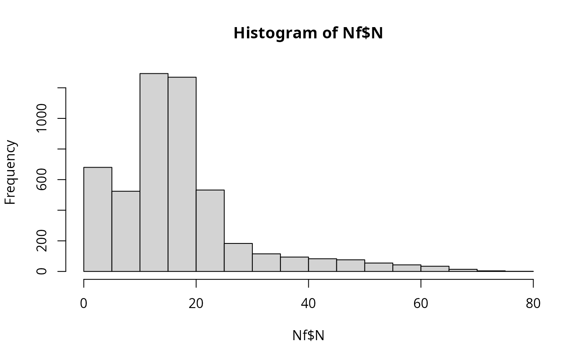

Internal contamination of fish fillets during brine injection
Source:R/sfBriningCC.R
sfBriningCC.RdThe function sfBriningCC() simulates the potential internal contamination of fish fillets during brining by injection
of salt solution. The cross-contamination algorithm accounts for four possible scenarios:
cross-contamination occurring in lots already contaminated;
cross-contamination occurring in lots that were not contaminated;
no additional contamination occurring in lots already contaminated; and
no cross-contamination occurring in lots that were not contaminated. Probabilities of occurrence of the four events are computed.
The mean volume of brine injected per fillet (V_inj) and the mean concentration of L. monocytogenes in brine (N_brine) are
allowed to vary from lot to lot; and, to this effect, their values are sampled from Pert distributions with parameters volInjMin, volInjMode,
volInjMax; and concBrineMin, concBrineMode, concBrineMax, respectively. To estimate the number of cells transferred to the
fish fillet, it is assumed that the cells follow a Poisson distribution in the volume of brine.
Usage
sfBriningCC(
data = list(),
pccBrine,
volInjMin,
volInjMode,
volInjMax,
concBrineMin,
concBrineMode,
concBrineMax
)Arguments
- data
a list of
N(
CFU) A matrix ofsize nLotslots bysizeLotunits containing the numbers of L. monocytogenes in/on fish fillets;PMean prevalence of contaminated lots (scalar);
ProbUnitPosProbability of individual lots being contaminated (vector).
- pccBrine
Probability that the brine solution is contaminated with L. monocytogenes (scalar).
- volInjMin
(
ml) minimum volume of brine solution injected in a fish fillet (scalar).- volInjMode
(
ml) most likely volume of brine solution injected in a fish fillet (scalar).- volInjMax
(
ml) maximum volume of brine solution injected in a fish fillet (scalar).- concBrineMin
(
CFU/ml) minimum concentration of L. monocytogenes in contaminated brine solution (scalar).- concBrineMode
(
CFU/ml) most likely concentration of L. monocytogenes in contaminated brine solution (scalar).- concBrineMax
(
CFU/ml) maximum concentration of L. monocytogenes in contaminated brine solution (scalar).
Value
A list of three elements:
N(
CFU) A matrix of sizenLotslots bysizeLotunits containing the numbers of L. monocytogenes in brined fish;ProbUnitPosProbability of individual lots being contaminated after brining (vector);
PMean prevalence of contaminated lots after brining (scalar).
Note
The suggested value of \(probCCDice\_brine=0.135\) is taken from Gudbjornsdottir2005;textualqraLm and Gudbjornsdottir2004;textualqraLm, who analysed the presence of L. monocytogenes in brining solution, detecting 3 positive samples out of 14, and 2 positive samples out of 23, respectively. The parameters of the distributions about mean volume of brine solution injected in a fish fillet and mean concentration of L. monocytogenes in brine must be defined by the user and/or tested in scenarios.
Author
Ursula Gonzales-Barron ubarron@ipb.pt and Regis Pouillot rpouillot.work@gmail.com
Examples
nLots <- 100
sizeLot <- 50
pccBrine <- 5 / 37
volInjMin <- 0.5
volInjMode <- 1.2
volInjMax <- 4.5
concBrineMin <- 0
concBrineMode <- 3
concBrineMax <- 40
ProbUnitPos <- rep(0.105, nLots)
dat <- list(
N = matrix(rpois(nLots * sizeLot, 16),
nrow = nLots,
ncol = sizeLot
),
P = 0.22,
ProbUnitPos = ProbUnitPos,
nLots = 100,
sizeLot = 50
)
Nf <- sfBriningCC(
dat,
pccBrine,
volInjMin, volInjMode, volInjMax,
concBrineMin, concBrineMode, concBrineMax
)
hist(Nf$N)
